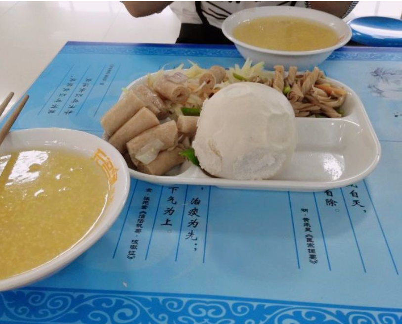

餐厅
“美味的餐厅。“

体验就是还可以，饭的种类多，价格也正常，环境也可以，装修得很不错。我一般去杏苑餐厅一，东边的黄焖鸡，一般我都要黄焖莲菜加茄子，不错；东边最靠北的那家拌面也可以，而且麻酱拌面就要五元；早上的时候，中间的教职工区卖菜角的也可以，还有旁边的长垣火烧也可以；西边的炒菜也很好吃，我最喜欢宫保鸡丁；西边的自选餐也可以。一般大家聚餐或者想吃顿好的就去杏苑三楼。鸡公煲、煲仔饭、小面包房、麻辣香锅、锅盔，都还挺不错的，装修也很nice。杏苑二楼装修最平常，但是饭最便宜。橘井餐厅很少去不太清楚就不说了。

美食还是挺多的，两个餐厅都是新装修的，推荐去杏苑餐厅三楼转转。鸡公煲、鱼粉、石锅饭、花甲、甜点，酸辣粉都挺好的，相较一二楼的饭虽然贵一点，为了美食还是可以接受的。橘井餐厅前两年还是挺好的，美食挺多，只不过后来好窗口都消失了，去一次恶心一次，就没再去过了。另外推荐一楼的刀削面，量大份足又美味，每次我都吃不完哈哈，中间买鸭腿饭的还不错，菜很有味。餐厅需要改善的地方还很多，河南中医药大学的餐厅的特点就是便宜吧，一顿饭不到十块钱，以前的一楼教职工餐厅饭菜是最实惠的，好多老师也在这里吃饭。胡辣汤，包子，豆浆，拉面，豆粥，shà汤，煎包菜角，手抓饼，八宝粥，火烧，炸鸡。。非常好的早点呐~